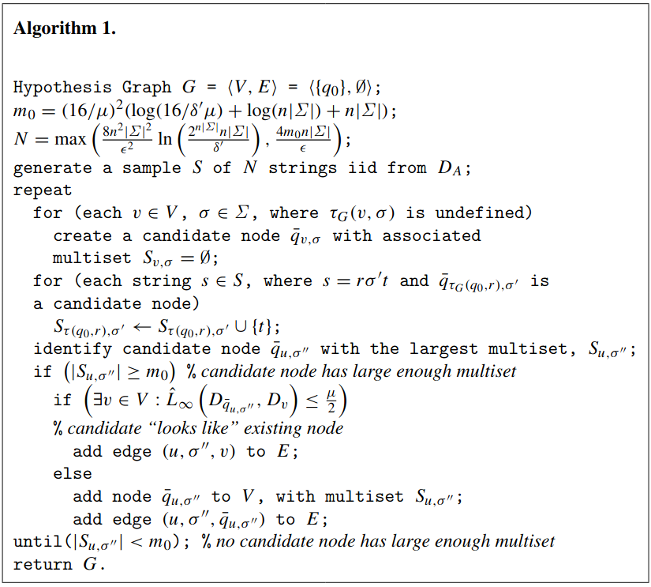

Implementation of the (Palmer & Goldberg, 2005) PAC algorithm.
These days I’ve been working on a problem that required the learning
of a Probabilistic Deterministic Automata (PDFA) .
In particular, the learning algorithm we are using
provides guarantees on the total variation distance between
the ground truth automaton $\mathcal{A}$ and the learned automaton $\mathcal{A}^\prime$ .
In the following, I will provide more background definitions and details on my implementation of the algorithm.
PDFA
A Probabilistic Deterministic Finite Automaton $\mathcal{A}$ is
a tuple $\langle Q, \Sigma, q_0, q_f, \tau, \gamma \rangle$ where:
$Q$ is the set of states.
$\Sigma$ is the alphabet.
$q_0 \in Q$ is the initial state.
$q_f \not\in Q$ is the final state.
$\tau: Q \times \Sigma \to Q$ is the transition function.
$\gamma: Q \times \Sigma \to [0, 1]$ is a function that associates a transition
$(q, \sigma)$ to the probability that that transition can be taken.
Other requirements for a valid PDFA are:
$\forall q.\sum_{\sigma \in \Sigma} \gamma(q, \sigma) = 1$, that is, the probabilities of the outgoing transitions from a given state $q$ must sum to $1$.
when $\tau(q, \sigma)$ is undefined, $\gamma(q, \sigma) = 0$.
$\forall q. \exists s\in\Sigma^*. \tau(q, s) = q_f \wedge \gamma(q, s) > 0$, i.e. $q_f$ is reachable with probability non-zero from any state.
A PDFA $\mathcal{A}$ defines a probability distribution over strings in $\Sigma^*$. Notice that
the reachability of the final state $q_f$ ensures that any execution of $\mathcal{A}$ will halt with probability $1$.
It is useful to extend $\tau$ and $\gamma$ for succinteness purposes, i.e.:
Let $D_{\mathcal{A}}(s)$ be the probability distribution over strings $\Sigma^*$.
We have:
$D_{\mathcal{A}}(s) = \gamma(q_0,s)$ for $s$ such that $\tau(q_0,s) = q_f$.
Moreover, we define the variation distance $L_1$ between two distributions
$D_1$ and $D_2$ over $\Sigma^$ as
$L_1(D_1, D_2) = \sum_{s\in\Sigma^} | D_1(s) - D_2(s) |$.
Later, it will be useful the following definition of $L_{\infty}$-norm between two distributions $D$, $D^\prime$:
I implemented a tiny Python libraryNot meant to be production-ready to handle PDFAs.
In the following code snippet, you can see the implementation of the class for representing
a PDFA.
"""Base module of the PDFA package."""
from dataclasses import dataclass
from typing import AbstractSet, Collection, Set, Tuple
import numpy as np
from src.helpers.base import assert_
from src.pdfa.helpers import (
_check_ergodicity,
_check_is_legal_character,
_check_is_legal_state,
_check_is_legal_word,
_check_transitions_are_legal,
)
from src.pdfa.types import Character, State, TransitionFunctionDict, Word
@dataclass(frozen=True)
class PDFA:
"""
Probabilistic Deterministic Finite Automaton.
- The set of states is the set of integers {0, ..., nb_states - 1} (nb_states > 0)
- The alphabet is the set of integers {0, ..., alphabet_size - 1}
- The initial state is always 0
- The final state is always "nb_states"
- The transition function is a nested dictionary:
- at the first level, we have states as keys and the dict of outgoing transition_dict as values
- a dict of outgoing transition_dict has characters as keys and a tuple of next state and probability
as value.
At initialization times, checks on the consistency of the transition dictionary are done.
"""
nb_states: int
alphabet_size: int
transition_dict: TransitionFunctionDict
def __post_init__(self):
"""Post-initialization checks."""
assert_(self.nb_states > 0, "Number of states must be greater than zero.")
assert_(self.alphabet_size > 0, "Alphabet size must be greater than zero.")
_check_transitions_are_legal(
self.transition_dict, self.nb_states, self.alphabet_size
)
_check_ergodicity(self.transition_dict, self.nb_states, self.final_state)
def get_successor(self, state: State, character: Character) -> State:
"""
Get the successor state.
:param state: the starting state.
:param character: the read symbol.
:return: the new state.
"""
_check_is_legal_state(state, self.nb_states)
_check_is_legal_character(character, self.alphabet_size)
next_transitions = self.transition_dict.get(state, {})
assert_(
character in next_transitions,
f"Cannot read character {state} from state {character}.",
)
next_state, _probability = next_transitions[character]
return next_state
def get_successors(self, state: State) -> AbstractSet[State]:
"""Get the successors."""
_check_is_legal_state(state, self.nb_states)
return {
successor
for _character, (successor, _probability) in self.transition_dict[
state
].items()
}
def get_next_transitions(
self, state: State
) -> Collection[Tuple[Character, float, State]]:
"""Get next transitions from a state."""
_check_is_legal_state(state, self.nb_states)
return {
(character, probability, successor)
for character, (successor, probability) in self.transition_dict[
state
].items()
}
@property
def initial_state(self):
"""Get the initial state."""
return 0
@property
def final_state(self) -> State:
"""Get the final state."""
return self.nb_states
@property
def states(self) -> Set[State]:
"""Get the set of states."""
return set(range(self.nb_states))
@property
def transitions(self) -> Collection[Tuple[State, Character, float, State]]:
"""Get the transitions."""
return {
(start, char, prob, end)
for start, out_transitions in self.transition_dict.items()
for char, (end, prob) in out_transitions.items()
}
def get_probability(self, word: Word):
"""Get the probability of a word."""
if len(word) == 0:
return 0.0
_check_is_legal_word(word, self.alphabet_size)
result = 1.0
current_state = self.initial_state
for character in word:
if current_state is None or current_state == self.final_state:
result = 0.0
break
next_state, probability = self.transition_dict.get(current_state, {}).get(
character, (None, 0.0)
)
current_state = next_state
result *= probability
return 0.0 if current_state != self.final_state else result
def sample(self) -> Word:
"""Sample a word."""
current_state = self.initial_state
word = []
while current_state != self.final_state:
characters, probabilities, next_states = zip(
*self.get_next_transitions(current_state)
)
index = np.random.choice(range(len(characters)), p=probabilities)
next_character = characters[index]
current_state = next_states[index]
word.append(next_character)
return word
In particular:
The set of states is the set of integers $\{ 0, …, nb\_states - 1\}$ (with $nb\_states > 0$)
The alphabet is the set of integers $\{0, …, alphabet\_size - 1\}$
The initial state is always $q_0 = 0$
The final state is always $q_f = nb\_states$
The transition function is a nested dictionary:
at the first level, we have states as keys and the dict of outgoing $transition\_dict$ as values
a dict of outgoing transitions has characters $\sigma$ as keys and a tuple of next state and probability
$(q^\prime, p)$ as value.
For example, to create an object representing the PDFA showed above (with $\zeta = 0.4$ and $\zeta^\prime = 0.7$):
There is a helper function to render the automaton with Graphviz:
from src.pdfa.render import to_graphviz
to_graphviz(automaton).render("path-to-file")
That results in:
Learning a PDFA
As stated earlier, the library also implements a PDFA learning algorithm, proposed in .
There exist other approaches (). In , they show how to learn acyclic PDFAs,
and apply the algorithm to speech and handwriting recognition. In ,
they are able to learn general PDFAs, using an upper-bound in terms of the Kullback–Leibler divergence
between the true distribution and the learned one. The one we are going to describe learns a PDFA
whose total variation distance from the true PDFA is upper-bounded by an $\varepsilon$:
All the mentioned algorithms are Probably Approximately Correct for some probability $\delta$ to fail and some error
tolerance $\varepsilon$ . That is, with probability $1-\delta$,
they learn a model whose error measure is guaranteed to be upper-bounded by some quantity depending on $\varepsilon$.
An important concept in the context of the learning of a PDFA is the distinguishability of
any pair of states. Formally, we say that a pair of nodes
$(q_1,q_2)$ are $\mu$-distinguishable if
where $D_{q}$ is the distribution represented by the automaton starting from $q$.
The idea is that $q_1$ and $q_2$ should have sufficiently different suffix distributions
in order to be considered separate states.
The algorithm is quite complex to be explained in detail here.
It takes in input the following parameters:
$\Sigma$: the alphabet size.
$n$: an upper bound on the number of states of the target automaton.
$\mu$: a lower bound on distinguishability.
Plus the PAC parameters $\delta$ and $\varepsilon$.
It is composed in two parts:
Estimation of a subgraph $H$ of the underlying graph of a PDFA;
Estimation of the probabilities on the edges.
Here the pseudocode of both algorithms:

Find a subgraph $H$ of $\mathcal{A}$
Find the probabilities $\gamma(q,\sigma)$ forall $q,\sigma$
For both algorithms, we need to generate a certain amount of samples from the true PDFA $\mathcal{A}$.
However, despite the number of samples is polynomial
in terms of all the parameters of the algorithm,
the amount of samples needed for the PAC guarantees is computationally prohibitive
for even reasonable assignment of such parameters.
For example, say we want to learn an automaton with $n=2$, $|\Sigma| = 2$, $\mu = 0.1$, and
PAC parameters $\varepsilon = 0.1$ and $\delta^\prime = \delta^{\prime\prime} = 0.1$
($\delta^\prime$ is the probability of failure of Algorithm 1, whereas
$\delta^{\prime\prime}$ is the probability of failure of Algorithm 2. They are
such that $\delta^\prime + \delta^{\prime\prime} = \delta$).
The following code snippet compute the number of samples for Algorithm 1:
"""Compute sample size for Algorithm 1."""
from math import ceil, log2, log
def compute_m0(n: int, s: int, mu: float, eps: float, delta_1: float):
return ceil((16 / mu) ** 2 * (log2(16 / delta_1 / mu) + log2(n * s) + n * s))
def sample_size_1(n: int, s: int, mu: float, eps: float, delta_1: float):
"""Compute N for Algorithm 1."""
m0 = compute_m0(n, s, mu, eps, delta_1)
N1 = 8 * (n ** 2) * (s ** 2) / (eps ** 2) * (log((2 ** (n * s)) * n * s / delta_1))
N2 = 4 * m0 * n * s / eps
N = ceil(max(N1, N2))
return N
This one does the same but for Algorithm 2:
"""Compute sample size for Algorithm 2."""
from math import ceil, log
def sample_size_2(n: int, s: int, mu: float, eps: float, delta_2: float):
n1 = 2 * n * s / delta_2
n2 = (64 * n * s / eps / delta_2) ** 2
n3 = 32 * n * s / eps
n4 = log(2 * n * s / delta_2)
N = ceil(n1 * n2 * n3 * n4)
return N
The number of samples for Algorithm 1 is given by:
n = 2
s = 2
mu = 0.1
eps = 0.1
delta_1 = 0.1
N = sample_size_1(n, s, mu, eps, delta_1)
Where N is 68173280 ($\approx 68 \cdot 10^6$ number of samples).
For Algorithm 2:
delta_2 = 0.1
N = sample_size_2(n, s, mu, eps, delta_2)
The result in N is 294072829470708 ($\approx 3 \cdot 10^{15}$ number of samples).
As said, these numbers are not practical for any personal computer.
However, for some examples, a much lower number of samples can be enough,
as shown in the next section.
You should execute the code snippet in the previous sections
in order to get the automaton variable.
from src.learn_pdfa.base import learn_pdfa
from src.learn_pdfa.common import Generator, MultiprocessedGenerator, SimpleGenerator
generator = MultiprocessedGenerator(SimpleGenerator(automaton), nb_processes=8)
learned_pdfa = learn_pdfa(
sample_generator=generator,
alphabet_size=2,
epsilon=0.4,
delta_1=0.2,
delta_2=0.2,
mu=0.1,
n=3,
# the following are upper bound to the number of samples.
n1_max_debug=3000000,
n2_max_debug=1000000,
m0_max_debug=3000000 / 10,
)
The generator is an object that generates the samples from a PDFA instance.
SimpleGenerator is just a wrapper to an automaton, whereas
MultiprocessedGenerator parallelizes the sampling using multiprocessing. Would be interesting to devise a sampling strategy that is _not_ sequential.
Notice the parameters n1_max_debug1, n2_max_debug and m0_max_debug.
They are used to cap the number of samples for Algorithm 1,
the number of samples for Algorithm 2, and
the value $m_0$, respectively.
This library provides a simple (Python) implementation of Probabilistic Deterministic Finite Automata,
and a PAC-learning algorithm .
As future work, the other algorithms could be implemented, e.g. the one for the acyclic PDFAs
and the one using the KL divergence as error metric .